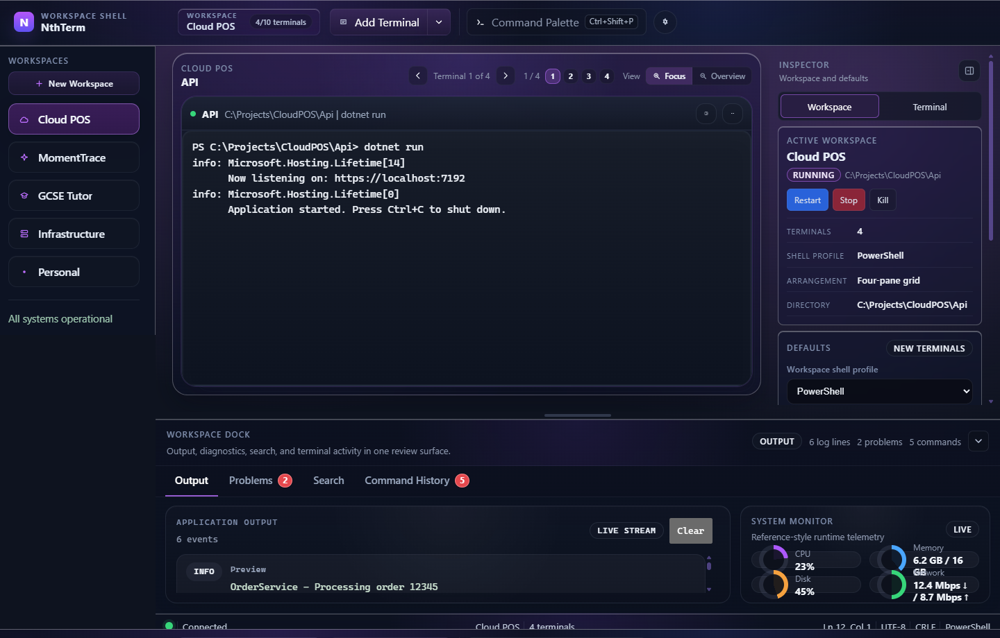
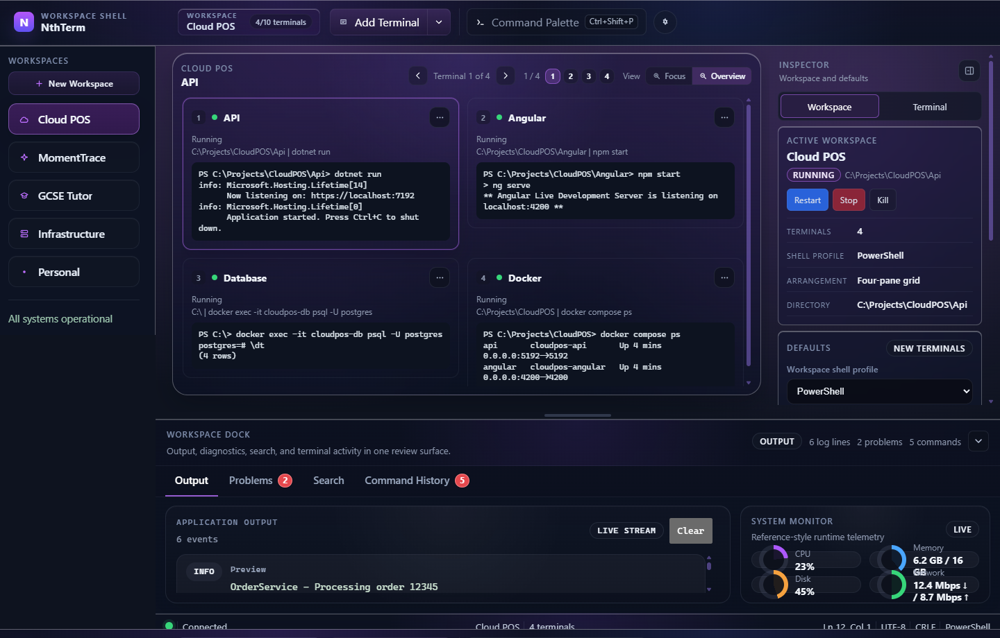

~/api$ go run ./cmd/server
INFO listening on :8080
ready · health check ok
~/api$ ▋NthTerm
Keep frontend, backend, and Docker in one workspace. Focus a live session — or zoom out and see the whole stack.
Unsigned RC — SmartScreen and Gatekeeper may warn. Install over an existing copy; workspace data stays put.

Frontend, API, Docker, and tests — without juggling windows.
See the whole stack at once.
Vite on one card, your API on another, compose logs beside tests. Park them all — PTYs stay alive.

Focus when you need depth.
Jump into the API while Vite and compose keep running in the stack behind you.
api · go run
InOut
~/web$ pnpm dev
VITE ready in 312 ms
Local: http://localhost:5173$ docker compose up
postgres-1 | database system is ready
redis-1 | Ready to accept
$ ▋Try NthTerm now.
Grab the latest release candidate for your platform.